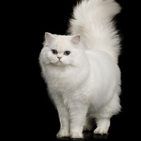
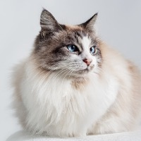
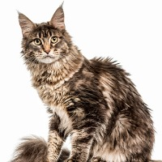
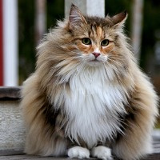
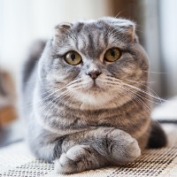
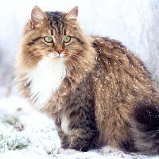
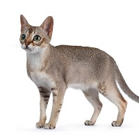
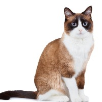
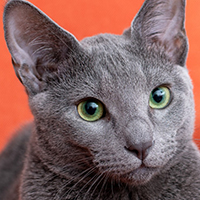
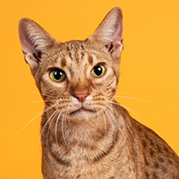

Kucing Persia
Kucing Persia berbulu panjang ini berasal dari Italia pada abad ke 17 dan dibawa dari Persia oleh Pietro Della Valle.

Kucing Ragdoll
Karakter kucing Ragdoll adalah sangat tenang dan penurut. Kucing ini tergolong tidak terlalu atletis serta lebih menyukai permainan yang lembut.

Kucing Siamese
Kucing Siam termasuk salah satu ras kucing tertua yang tercatat. Mereka adalah keturunan dari keluarga kucing Felidae.

Kucing Maine Coon
Kucing Maine Coon dapat menjadi hewan peliharaan pilihan bagi keluarga yang memiliki anak-anak dikarenakan mereka adalah jenis kucing yang baik hati.

Kucing Norwegia
Kucing Hutan Norwegia bukan hanya megah, tetapi juga salah satu ras kucing berbulu panjang yang paling cantik yang pernah ada.

Kucing Scottish Fold
Scottish Fold mempunyai ciri kupingnya yang terlipat menyembul dari permukaan, kepalanya yang bulat terlihat seperti kucing manis yang menggunakan helm.

Kucing Siberian
Siberian adalah kucing berukuran besar, kuat, yang membutuhkan waktu hingga 5 tahun untuk menjadi dewasa.

Kucing Singapura
Jalanan di Singapura adalah asal muasal ras kucing yang cantik ini. Kucing ini kombinasi dari kedua corak ticked-coated dan keturunan yang bewarna coklat tua di Asia Tenggara.

Kucing Snowshoe
Snowshoe adalah kucing yang layak dalam segala hal, coraknya terpendam secara genetik dan persyaratan yang sulit harus diperkuat untuk menjaga dan menekankan ciri-ciri yang tepat.

Kucing Sphinx
Kucing sphinx mempunyai penampilannya yang mencolok, ditandai dengan kulit yang tidak berbulu, keriput, dan telinga yang lebih besar dari biasanya.

Kucing Russian Blue
Russian Blue memiliki dua lapisan bulu yang sangat berbeda dengan jenis lainnya: pendek, tebal dan sangat halus dan kepadatannya yang membuat bulu mereka menonjol dari tubuhnya.

Kucing Ocicat
Ocicat adalah hewan yang besar dan aktif dengan tubuh yang berotot dan berbulu satin pendek dan langka yang menunjukan bintik-bintiknya.